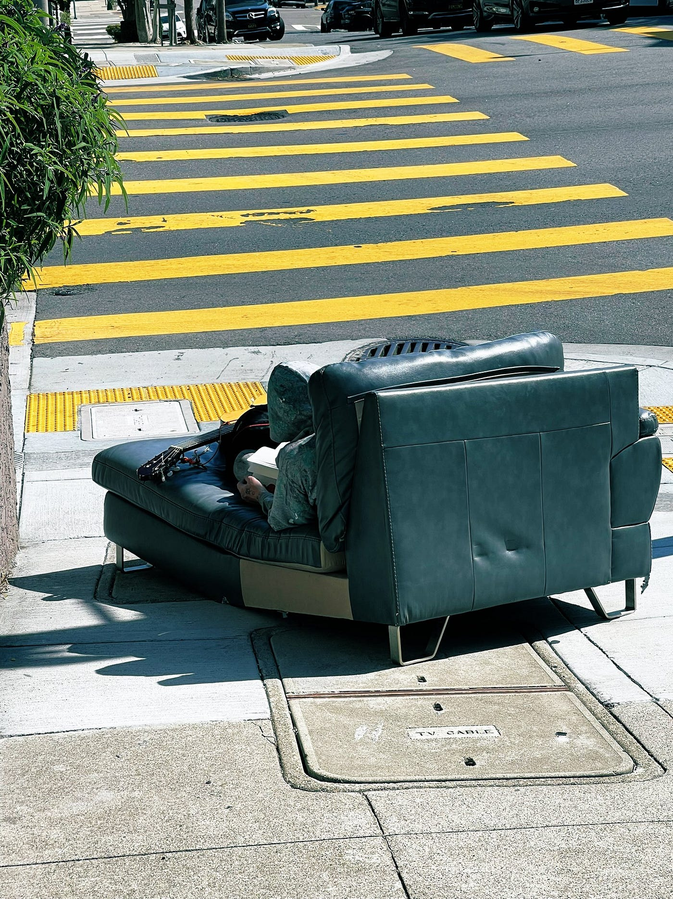
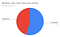
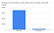
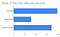

These Homeless Tech-Entrepreneurs
and this kara Swisher’s Tweet

When I was listing the women who deserved a gratitude article as part of the Greyio Experiment I just decides to not add the name of Kara switcher because I said to myself that she was famous than these great women but they all are great women doing important work that matter for this world. But it feels like writing another article about Kara swisher because this one is probably about her because this article is inspired by a picture that she tweeted 3 hour

I interpreted the picture as one e that tries to tell that there are also homeless persons in SF. On my mind popped this homeless [person I was in FR and this man I am now in SN in 2021 probably won't live again this experience once he is in SF. I can say that it is not the first time I saw this precise picture on the internet. I have seen it elsewhere years ago and I can't tell where. Now years after I am seeing myself writing an article about it and I am sincerely analyzing it and giving my interpretation according to the gap between it and my own experience as homeless in FR. I can say right now that the places that I used to squat were scrappier than this place and I mean cleaner. My mind goes to my few days American friend who introduced me to CDG airport and taught me how to get food for free from Mac Donalds. I don't agree that I went back to this CDG without this US man that I happen to see in the background of a completely outside topic of an FR tv news some years here when I was already back in SN.
I can't know if you are a man or a woman (the person in the picture of the tweet) but if you are homeless I really wish you to get your dream home in SF if you are still alive or right now dead and resuscitated in paradise. But this place where you have been pictured is cleaner than what I used to experience as a homeless tech-entrepreneur and I can agree also that I bought also my waste in these places I was squatting and did less or nothing for cleaning them. Then for me, this picture if it is a real pictured scene tells me two things one is that this homeless person is clean and two is SF is also a clean city. But I am not telling that FR is dirtier than SF because I can’t conclude this statement given the information I got from my homeless tech-entrepreneur experience and this picture. But it sure that two days ago, I cleaned a whole on side of the sides of this 21 SN street where I am living up until 20 SN street. It was not my job to clean public space but I think that I contributed to its dirtiness and it was an occasion for me to be useful to the world and to myself without bargaining something.
Kara Swisher, now I write correctly here name could also complete these article into which I give some statistic about the words I used in all of my +500 articles because I very often and even always make the mistake of writing switcher instead of swisher and here is the completed chart

To say that I also and often make mistakes but I hope that I will always be able to discover and avoid them.
How many of us Medium users are writing daily because it is important to know how often we write about something compared to other medium users and about what we write the most. My surface searching informed that there are 65,000 writers on medium. If I compare the number of time the names Kara Swisher and Seth Godin were written in Medium, here is what we get

then here are some charts that could show the number of times I have written the real name of someone.

You can see that in this article and this one titled Blogs as a source of good Hire signal that I have published two days ago that I am trying to learn from my writing using statistical fact and while doing this I thought that these 65,000 medium writers may also need such kind of analysis then I thought that a tech-enabled platform that eases this analysis process could be welcomed by the community of medium writers. Working on it using myself as a typical user.
PS: I learn a lot from my homeless entrepreneurship experience but I wish I will never have this life again because it is really hard. Wish that all of you who are desperately living a homeless experience will soon return to a normal lifestyle.